| Previous | Table of Contents | Next |
Experiments should be reproducible: they should all fail in the same way.
— Finagle’s Rule
One-factor designs are used to compare several alternatives of a single categorical variable. For example, one could use such a design for comparing several processors, several computer systems, or several caching schemes. Techniques to analyze such designs are presented in this chapter. There is no limit on the number of levels that the factor can take. In particular, unlike the 2k designs, the number of levels can be more than 2.
The model used in single-factor designs is
| yij = µ + αj + eij | (20.1) |
Here, yij is the ith response (or observation) with the factor at level j (that is, the jth alternative), µ is the mean response, αj is the effect of alternative j, and eij is the error term. The effects are computed so that they add up to zero:
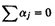
The measured data in a one-factor design consists of r observations for each of the a alternatives. There are a total of ar observations, which are arranged in an r×a matrix so that r observations belonging to the jth alternative form a column vector. Let yij denote the ith entry in the jth column. If we substitute the observed responses in the model Equation (20.1), we obtain ar equations. Adding these equations, we get
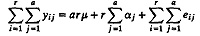
Since the effects αj add up to zero (by design) and we want the mean error to be zero, the preceding equation becomes
The model parameter µ is therefore given by
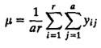
The quantity on the right-hand side is the so-called grand mean of all ar responses. It is denoted by 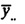. As explained earlier in Section 18.4, the two dots in the subscript indicate that the averaging is done along both dimensions (rows and columns) of the matrix. This should be distinguished from the column means, which are obtained by averaging responses belonging to a particular column (or alternative). The column mean for the jth column is denoted by  and is computed as follows:
and is computed as follows:
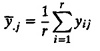
Substituting µ + αj + eij for yij, we obtain
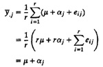
Here we have assumed that the error terms for r observations belonging to each alternative add up to zero. The parameter αj can thus be estimated as follows:
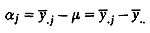
| TABLE 20.1 Analysis of the Code Size Comparison Study | ||
|---|---|---|
| R | V | Z |
| 144 | 101 | 130 |
| 120 | 144 | 180 |
| 176 | 211 | 141 |
| 288 | 288 | 374 |
| 144 | 72 | 302 |
This computation can be done easily in tabular form as illustrated in the following example.
| TABLE 20.2 Data from a Code Size Comparison Study | ||||
|---|---|---|---|---|
| R | V | Z | ||
| 144 | 101 | 130 | ||
| 120 | 144 | 180 | ||
| 176 | 211 | 141 | ||
| 288 | 288 | 374 | ||
| 144 | 72 | 302 | ||
| Column sum | 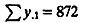 | 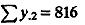 | 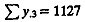 | 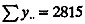 |
| Column mean | 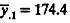 | 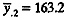 | 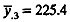 | 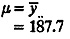 |
| Column effect | 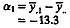 | 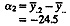 | 
| |
Once the model parameters have been computed, we can estimate the response for each of a alternatives. The estimated response for the jth alternative is given by
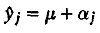
The difference between the measured and the estimated response represents experimental error. If we compute experimental errors in each of the ar observations, the mean error should come out zero since the parameter values µ and αj were computed assuming the sum of errors for each column was zero. The variance of the errors can be estimated from the Sum of Squared Errors (SSE):
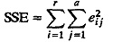

| Previous | Table of Contents | Next |